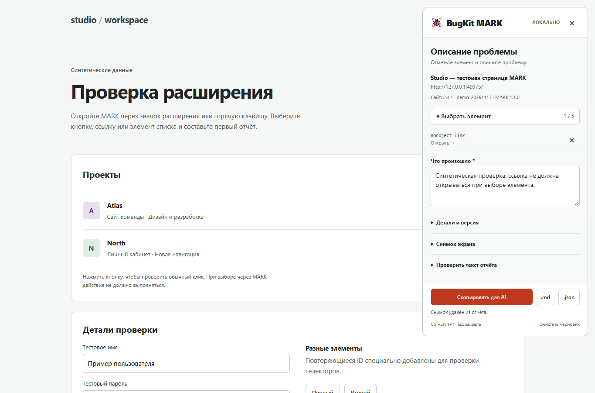

Claude Code
Run each command separately in the target project.
/plugin marketplace add bglglzd/bugkit
/plugin install bugkit@bugkit
/bugkit:installSelect an element, describe the problem and export a report. Use the local Chrome extension, or integrate reporting and status tracking into your application's existing stack.
Extension v1.1.0 · Russian interface · Manual ZIP installation · MIT

Download BugKit-MARK-1.1.0.zip and keep its extracted folder in a permanent location.
Open chrome://extensions, enable Developer mode and choose Load unpacked. Select extension, which contains manifest.json.
Click its toolbar icon, or press Ctrl+Shift+Y (macOS: ⌘+Shift+Y). Select an element, add a description and review the export.
No Node.js, Git, account or API key is needed. Change shortcuts at chrome://extensions/shortcuts. To update, replace the files, reload the extension and reload the website tab. ZIP installs have no automatic updates.
The installer adapts reporting to your existing UI, authentication and store. It adds forms, context export and a closure path according to the chosen recipe. This is a code integration, not a hosted backend.
Run each command separately in the target project.
/plugin marketplace add bglglzd/bugkit
/plugin install bugkit@bugkit
/bugkit:installPass this task to the agent working in your project.
Install BugKit in this project using https://raw.githubusercontent.com/bglglzd/bugkit/main/INSTALL.mdBoth installers require draft recovery, server-side authorization, masked context export and separate technical and author-facing resolution notes. Verify these paths in the host application. Existing reports and IDs must be preserved during upgrades.
Captures explicitly selected elements and optional visible screenshots. Exports Markdown, JSON and PNG. Draft text survives page reloads within the tab's browser session.
No automatic collection of form values, full HTML, console history or network traffic. It does not send reports to a server or fix bugs.
URL queries, fragments and credentials are stripped. Paths, visible text, identifiers and screenshots may still disclose private data. Clear drafts when changing website accounts.
Internal Chrome pages and some viewers block extensions. Iframe contents and closed Shadow DOM are not inspected. Physical macOS setup and native keyboard dispatch need manual verification.